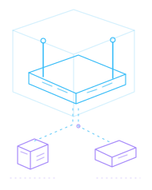

Accesso al Mezzo Radio: CSMA/CA e il Dilemma del Nodo Nascosto
Il Wi-Fi usa CSMA/CA (Carrier Sense Multiple Access with Collision Avoidance): i dispositivi ascoltano il canale e aspettano prima di trasmettere per ridurre le collisioni. Per riservare il canale possono scambiarsi una richiesta di invio (RTS, Request to Send) e un via libera (CTS, Clear to Send).

🧠
Confronto con Sistemi e Reti:
In Ethernet cablato si usava CSMA/CD (Carrier Sense Multiple Access with Collision Detection), accesso condiviso con ascolto e rilevamento delle collisioni sul cavo. Nel wireless questo principio fisico decade: scopriamo perché.
In questa lezione
⏱️
Prima di inviare. Seguirai l’ordine delle operazioni nel Wi-Fi: ascolto del canale, attesa casuale, invio e conferma di ricezione.
🔬
Due dispositivi che non si sentono. Osserverai come due nodi possano interferire presso lo stesso punto di accesso. Proverai il dialogo RTS/CTS per riservare il canale.
📶
Il tempo sul canale. Vedrai perché una trasmissione lenta può occupare più a lungo il mezzo condiviso e rallentare gli altri dispositivi.
1. Perché Non Possiamo Rilevare Collisioni via Radio?
Immagina di trovarti a un concerto metal e urlare a squarciagola con un megafono contro il muro: riusciresti a sentire il sussurro di un amico che parla da 20 metri di distanza nello stesso secondo? Assolutamente no.
In una scheda radio Wi-Fi accade esattamente la stessa cosa:
La potenza di trasmissione locale del tuo cellulare è di circa +15 / +20 dBm (decibel riferiti a un milliwatt), cioè circa 30-100 mW (milliwatt).
Il segnale che ricevi da un'altra stazione remota è attenuato a circa -70 / -85 dBm (pochi picowatt!).
La differenza è di oltre un milione di volte! Quando l'antenna locale trasmette, è "sorda" a qualsiasi segnale esterno. Per questo il Wi-Fi non può usare Detection (rilevare lo scontro), ma deve investire tutto sulla Prevention / Avoidance (evitare accuratamente di trasmettere insieme).
📐 Le pause prima di trasmettere o rispondere
Prima di trasmettere un frame dati, ogni stazione deve sentire l'etere libero per un tempo fisso chiamato DIFS (DCF Interframe Space). DCF (Distributed Coordination Function) è il metodo con cui i dispositivi si contendono il canale. La pausa breve prima di una risposta si chiama SIFS (Short Interframe Space). Se l'etere è libero, non parte subito! Estrae un numero casuale da una finestra di contesa (Backoff Timer) e fa il conto alla rovescia. Chi finisce per primo il timer vince l'etere. Se due stazioni estraggono lo stesso numero e collidono, non ricevendo l'ACK raddoppiano la finestra di attesa (Backoff Esponenziale).
2. Il Problema del Nodo Nascosto (Hidden Node Problem)
C'è un'insidia ancora peggiore: supponi che due smartphone, indicati come stazioni Wi-Fi (STA, Station) STA-A e STA-C, siano collegati allo stesso punto di accesso centrale (AP, Access Point) AP-B, ma siano posti ai due lati opposti di un grande corridoio o separati da un grosso muro portante.
STA-A vuole trasmettere e ascolta l'etere: "Silenzio perfetto, vado!". Nello stesso identico momento STA-C ascolta l'etere: non sente STA-A (perché è troppo lontano), crede che l'aria sia libera e trasmette anche lui! Entrambi i pacchetti arrivano all'AP-B nello stesso microsecondo: COLLISIONE TOTALE!
La Soluzione Elegante: RTS / CTS (Request to Send / Clear to Send)
Per superare il problema del nodo nascosto, l'802.11 introduce una riserva preventiva dell'etere:
Host A invia un piccolo frame di controllo RTS (Request to Send) all'Access Point, dichiarando: "Voglio trasmettere per 1.5 millisecondi".
L'Access Point risponde in broadcast con un CTS (Clear to Send): "Autorizzato! L'etere è riservato per 1.5 millisecondi".
Poiché il CTS dell'Access Point è potente e copre tutta la stanza, anche Host C lo riceve! Host C legge il valore di tempo e imposta il proprio NAV (Network Allocation Vector), congelando qualsiasi trasmissione radio fino al termine dello scambio di Host A.
Host A invia i dati reali in totale tranquillità. L'AP chiude con un ACK.
3. Perché il Wi-Fi a Scuola Diventa Lentissimo con Tanti Utenti?
🐌La Maledizione del "Peggiore della Classe": L'Airtime Fairness
Immagina un'aula con 25 studenti connessi allo stesso Access Point con una linea Internet da 1 Gigabit in fibra. Perché a volte non si apre nemmeno la pagina di Google?
La colpa è di come funziona il CSMA/CA di base: l'Access Point concede l'accesso all'etere a turno in base al numero di pacchetti, non in base al tempo di occupazione dell'aria!
Se uno studente siede all'ultimo banco dietro a un armadio di ferro con una tacca di segnale (-85 dBm), la sua scheda Wi-Fi scala sulla modulazione più lenta e protetta (per esempio BPSK, Binary Phase Shift Keying, a due fasi, anziché 64-QAM, Quadrature Amplitude Modulation, con 64 combinazioni di ampiezza e fase). Nell’esempio passa da 54 a 1 megabit al secondo (Mbps). Per trasmettere una foto da 5 megabyte (MB), quel telefono occuperà l'etere radio per oltre 40 secondi consecutivi, obbligando tutti gli altri 24 compagni di classe (che hanno segnale perfetto) ad aspettare in silenzio il proprio turno! I router enterprise risolvono questo paradosso con l'Airtime Fairness: danno a ciascun utente la stessa frazione di millisecondi d'aria, impedendo ai dispositivi lenti di sequestrare la banda a tutta l'aula.
4. Checkpoint di Autovalutazione
Verifica di aver compreso la gestione delle collisioni e il protocollo di contesa per il controllo di accesso al mezzo (MAC, Media Access Control):
Telefoni e computer usano lo stesso canale per parlare con il punto di accesso (AP). Se inviano insieme, i segnali possono sovrapporsi: è una collisione.
Domanda lampo. Possiamo avere fibra veloce, tutte le tacche e Wi-Fi lento?
Sì. Può bastare che il canale radio sia già occupato.
AP · Access Point, punto di accesso Wi-Fi.
Prima di inviare, il Wi-Fi ascolta
La radio è half-duplex. Mentre trasmette, il suo segnale copre quelli più deboli degli altri dispositivi.
Per ridurre le collisioni il Wi-Fi usa il CSMA/CA, che regola l’ascolto e l’attesa prima dell’invio.
CSMA/CA · Carrier Sense Multiple Access with Collision Avoidance. Si ascolta il canale prima di usarlo.DIFS · DCF Interframe Space, la pausa a canale libero.DCF · Distributed Coordination Function, il metodo in cui i dispositivi si contendono il canale.
1. Ascolta. Il canale deve restare libero per una breve pausa fissa, il DIFS.
2. Sorteggia. Il backoff è il tempo di attesa casuale.
3. Trasmette. Il conto alla rovescia avanza a canale libero. A zero parte l’invio.
L’attesa casuale separa le partenze
Due telefoni si sentono. Dopo la pausa fissa, A sorteggia 2 intervalli e C ne sorteggia 5.
Dopo 2 intervalli liberi A trasmette. C sente A e mette in pausa il suo conteggio.
Dopo il ritorno del canale libero e la pausa fissa, C riparte da 5 o da 3?
Quando A inizia a trasmettere
A · 2 − 2 = 0, trasmette
C · 5 − 2 = 3: conserva i 2 intervalli già contati
L’ACK conferma la ricezione
Quando i dati arrivano leggibili, il punto di accesso attende una breve pausa, il SIFS, e risponde con un ACK, il messaggio di conferma.
Se due telefoni sorteggiano la stessa attesa, possono partire insieme. Una collisione può rendere illeggibili i dati.
SIFS · Short Interframe Space, la pausa breve prima della risposta.ACK · Acknowledgment, conferma di ricezione.
ACK ricevuto. Il mittente sa che i dati sono arrivati.
ACK assente. Il mittente può ritentare, sorteggiando da più valori per ridurre la probabilità di un’altra partenza simultanea.
Il nodo nascosto sfugge all’ascolto
Una parete separa i telefoni A e C. Entrambi raggiungono il punto di accesso, ma il segnale dell’uno è troppo debole per essere rilevato dall’altro.
A trasmette. Dalla propria posizione, C sente il canale libero e può iniziare a sua volta.
AP · Access Point, punto di accesso Wi-Fi.
Tel. A→AP←Tel. C
Collisione all’AP. I due segnali arrivano insieme al punto di accesso.
RTS e CTS riservano il canale
Una parete divide A e C. Solo il punto di accesso riesce a parlare con entrambi.
Dal CTS, C ricava quanto aspettare e imposta il NAV. Aspetta anche se il canale gli sembra libero.
Se C non riceve il CTS, può ancora partire.
RTS · Request to Send, richiesta di invio.CTS · Clear to Send, via libera all’invio.NAV · Network Allocation Vector, timer della riserva.ACK · Acknowledgment, conferma di ricezione.
RTSA chiede di inviare e indica la durata prevista.
CTSIl punto di accesso dà il via libera ad A. Anche C lo sente.
DATAA invia i dati mentre C aspetta.
ACKIl punto di accesso conferma ad A la ricezione.
Curiosità
Un invio più lento occupa il canale più a lungo
Quanto tempo serve per inviare 12 megabit a 6 Mb/s? E a 24 Mb/s?
Con un segnale debole il telefono può rallentare. Per inviare gli stessi dati occupa il canale per più tempo d’aria.
Con l’Airtime Fairness, il punto di accesso può bilanciare le quote di tempo. Nella stessa quota, il dispositivo veloce può inviare più dati.
Mb/s · Megabit al secondo, l’unità di velocità usata nell’esempio.
Tempo per inviare 12 megabit
A 6 Mb/s servono 2 secondi
A 24 Mb/s basta mezzo secondo
Il calcolo conta solo l’invio dei dati. Attese e messaggi di servizio si aggiungono.
Sfida alla classe
Mistero in corridoio. A e C sentono il punto di accesso, ma non si sentono fra loro a causa dei muri. Entrambi trovano il canale libero e iniziano a inviare nello stesso istante.
Dove si sovrappongono i segnali? Se A chiedesse il permesso per primo, quale risposta direbbe a C di aspettare? Ricostruiamo insieme lo scambio.
Soluzione guidata
I segnali si sovrappongono al punto di accesso, che riceve entrambi. A e C non si sentono direttamente.
Se A invia prima una richiesta RTS e il punto di accesso risponde CTS, C può sentire quel permesso, leggere il tempo di riserva e aspettare.
Da ricordare
Prima dell’invioIl Wi-Fi ascolta il canale e può aspettare un tempo casuale. La conferma segnala che i dati sono arrivati.
Nodo nascostoDue dispositivi possono collidere al punto di accesso. Un permesso CTS può far aspettare chi lo riceve.
Tempo d’ariaA parità di dati, una trasmissione più lenta occupa il canale più a lungo.